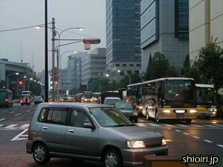
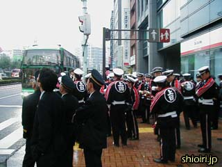
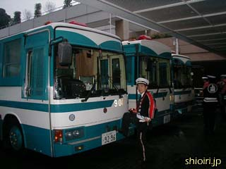
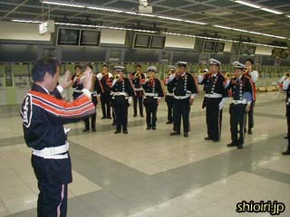

| 朝食は５時！出発は６時！こんな朝早くからホテルの朝食は出るのか？と心配していましたが、バンケットホールへ行ってみると全国各地から集まってきた消防団員でごった返していました。この日、新高輪プリンスホテルは日本消防協会が借り上げていたかのような勢いです。 |
|  |
東京ドーム前の道路は消防団員を乗せたバスでいっぱいです。 |
|  |
いまや消防団員も立派な制服が多くなり、このような場でハッピを身に付けているのはごくわずかのようです。
でも地元「上田」の名を背負って歩く気分というのも悪くなかったです。このハッピを着ていたおかげで、上田に住んでいたことのある東京ドームの受付嬢から声をかけてもらえました。 |
|  |
天皇皇后両陛下もお見えになるということで、警備がかなり厳重です。
ちょうどアルカイダが東京都心へのテロ攻撃を予告した直後でしたが、この大会も標的としては十分すぎるほど条件が揃っていたので、今思うとちょっと怖い感じがします。 |
|  |
早速、控室（場外馬券売場）で練習が始まりました。
楽長のハッピ姿は珍しい！というか、初めてハッピに袖を通したんだって！でも肩書きは…「副ラッパ長」？！ |
≪前のページ（前日） |
次のページ≫ |